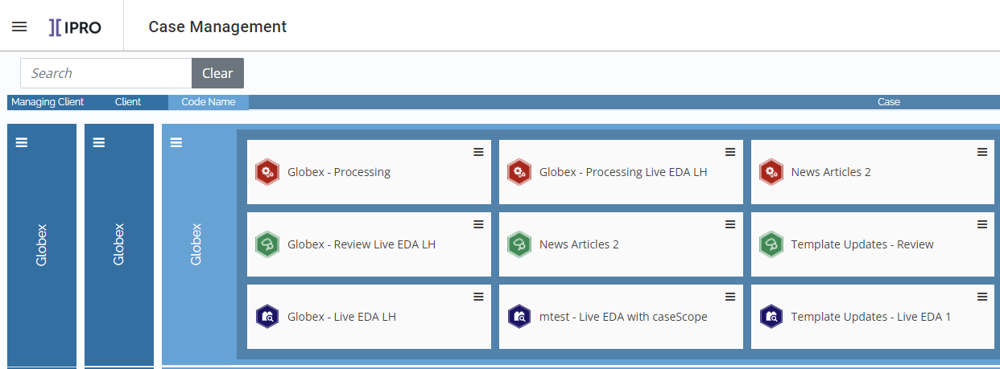

Note: One legal case (e.g. "U.S. v. Smith") may be broken up into several
The
Create and manage cases (projects) for discovery, review, and production
Create Managing Clients, Clients, and Code Names
Update settings for processing and review cases
Define and manage Import Series

Two levels of clients help you identify and manage cases:
Managing Clients
Clients
These are hierarchical, meaning Clients are assigned under Managing clients and you must create a Managing Client before you can create a Client.
Managing Clients provide a basis for case organization and tracking for organizations that perform work on behalf of other clients. For service providers, managing clients are the companies and firms the provider does business with. For law firms, the firm itself is often the managing client.
Clients provide a further level of identification and are typically reflective of whom the case is being hosted for. For law firms this may be the same as the managing client or may be individual clients; for service providers, different secondary clients may also be appropriate. Apply these client concepts to your company’s business configuration.
One you have created your Managing Clients and Clients, you can create and assign Cases. Cases allow you to organize your data and documents into individual eDiscovery projects, from in-place assessment through initial data ingestion, review and production.
|
|
Note: One legal case (e.g. "U.S. v. Smith") may be broken up into several |
In
|
|
|
|
|
|
|
|
|
A code name (also called
When defining a code name, a matter number can also be defined. The matter number is tied directly to the code name.
|
|
Note: A matter number is an additional internal identifier organizations may use to facilitate reporting. In |
By default the following templates are used. These
templates are part of the
|
DEFAULT Template |
Used for... |
Purpose |
|
DefaultProcessingCaseSettings.ini |
|
Settings for |
|
DefaultExportSettings.ini |
|
Settings for |
|
DefaultReviewCaseSettings.cse |
|
Settings for |
Administrators can create templates from within each
Note: If
you choose to replace the default templates, it is strongly recommended
that you first save the original
|
|
See eCapture by IPRO for complete details on processing and export settings. See |
Import Series are also created and managed in the Case Management module. An Import Series is created in a Processing Case (a Review case also needs to be created) and contains the fields required for the metadata and the options for the BEGDOC number to be imported into a desired Review Case. The metadata and options include sequential image key numbers, volumes, and like export options (native files, fields, export formats, and so on). For full details see
Related Topics